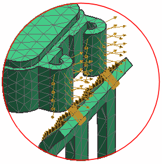

Use the Simulation Navigator to explore the existing model.
The model contains a two-body part that resembles a snap-in plug connector. A large displacement nonlinear solution will be used to simulate the assembly of the connector.
The solution type is NX Nastran Structural, Advanced Nonlinear (SOL 601, 106).
In the Simulation Navigator, the solution's Simulation Objects container lists two face contact objects.
The contact graphics are highlighted in the graphics window. The source faces for the contact are on the plug, and the target faces are on the socket.

These contact simulation objects model the regions where the plug will contact the socket as the plug is displaced.